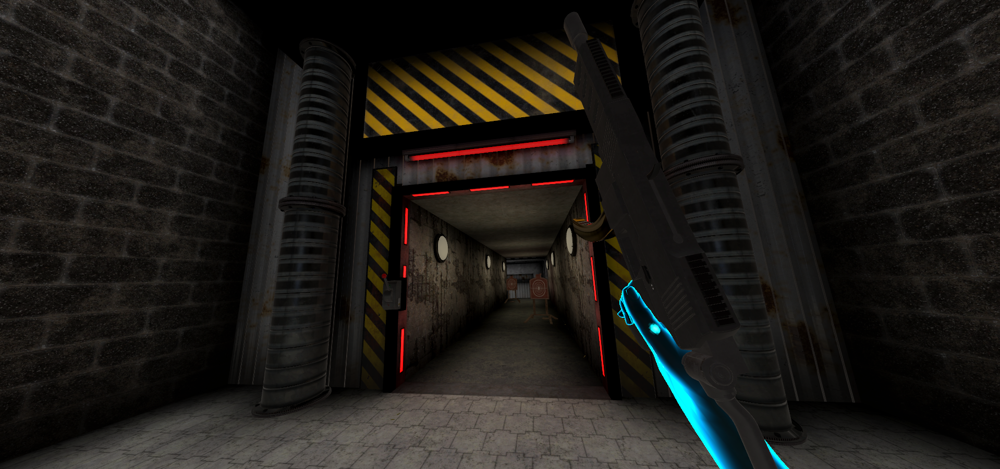
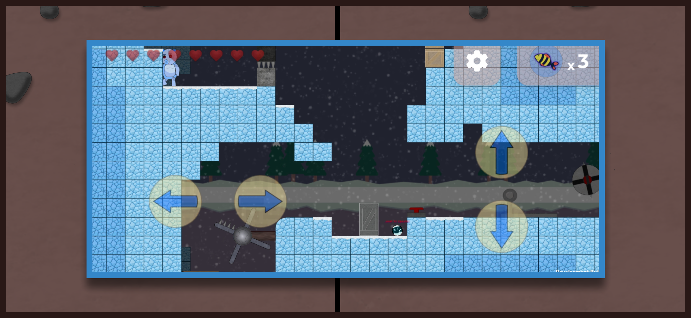
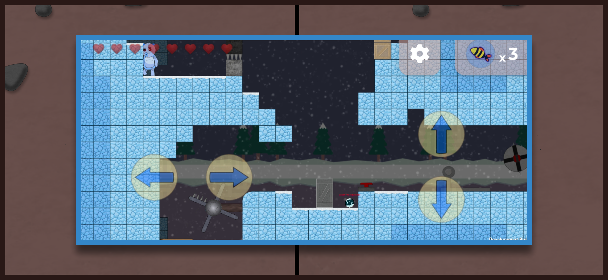
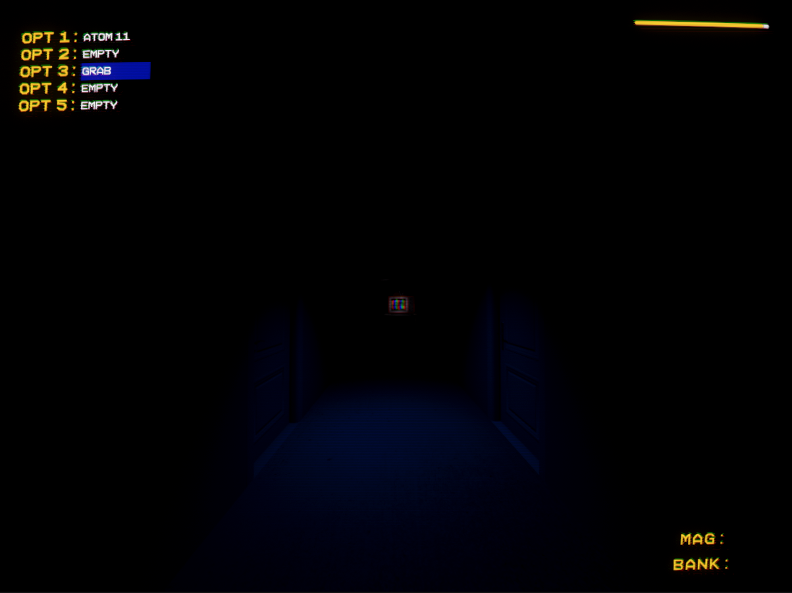
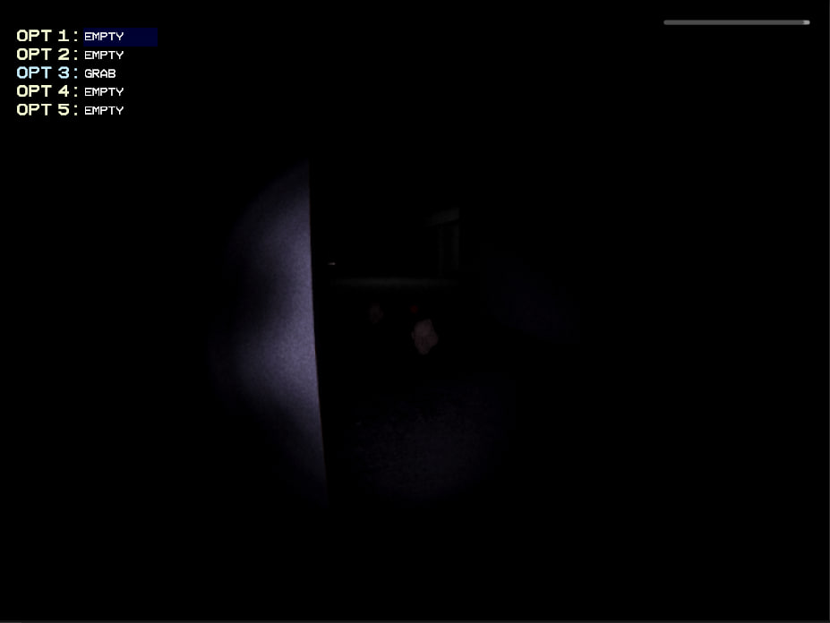
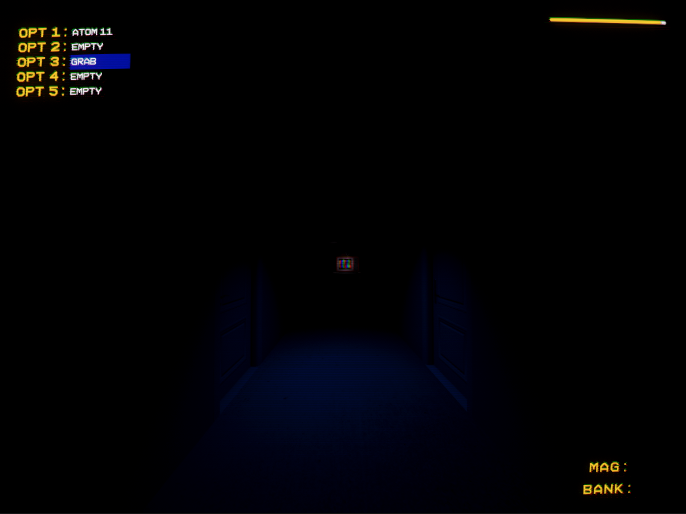
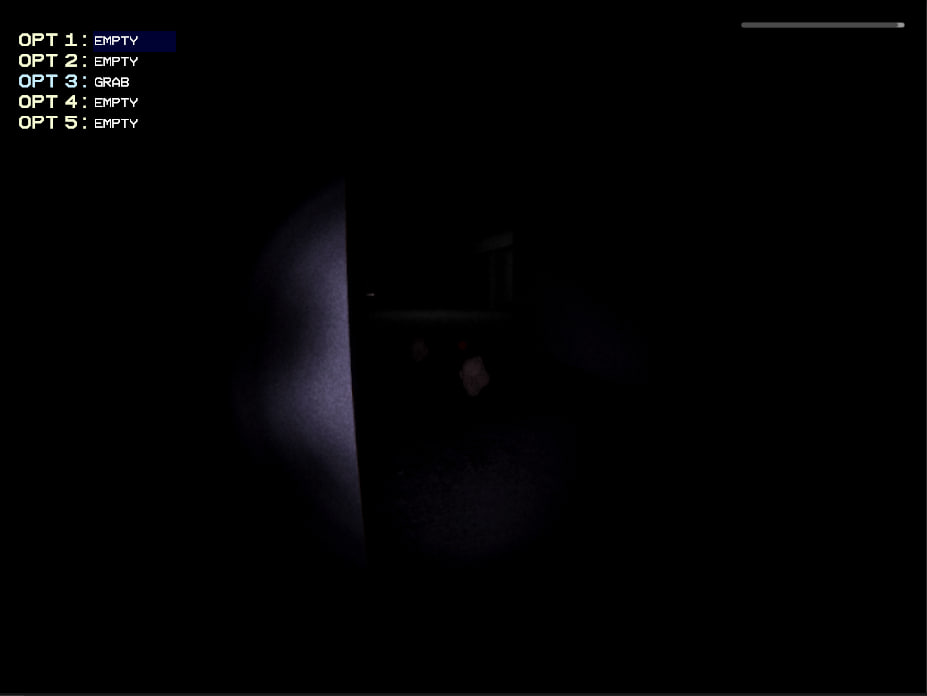
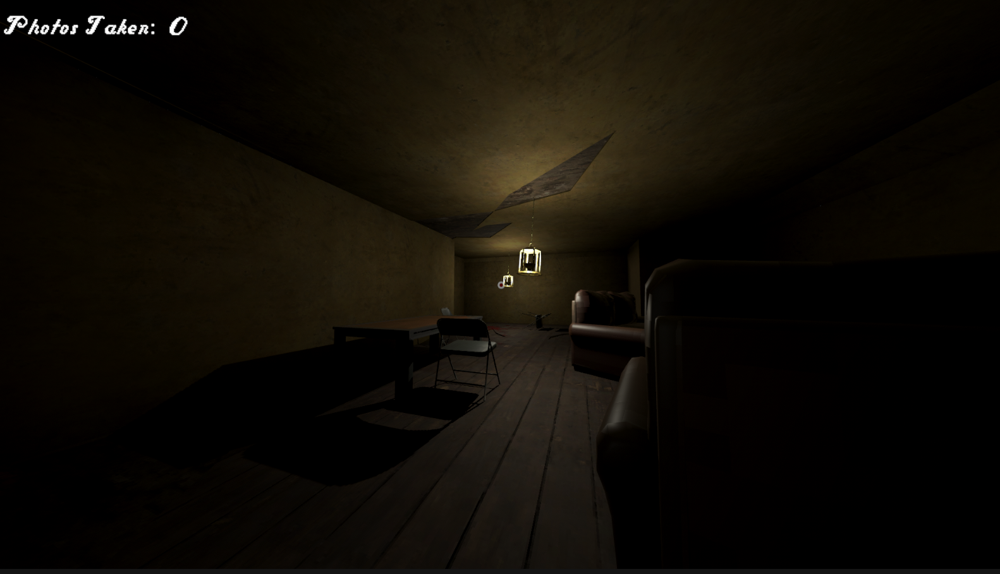

Experienced game programmer - experienced in both Unity & Godot.
I have both released my own game & worked professionally with game studios around the world such as Ten Flight Studios & Bronze Lantern Studio
Tails of a Cat
For this project, I made it as the sole, independent developer, as such I made:
the
sprites, the code base, the levels, the design, etc. This project was made in Unity, from 2022 to early-mid
2023: Travel through 3 detailed worlds, and transform into different materials and use their abilities to
overcome different levels and enemies.
 


Project Silent
For this project, I am developing it as the sole, independent developer, this
project is still under construction, however, so far there is a physics-based rigidbody player controller,
with precise control of acceleration, max speed, independent of player mass, I have also developed an
abstract interaction system which allows for player grabbing of kinematic objects such as guns and physics
object such as crates and bottles, it also allows for general interactions with environmental objects such as
pushing a button or opening a door. This project is planned to be released in 2024.

 
The Bone Snapper
This is another, smaller project I have been developing recently. This project, similarly to Project Silent, is a horror game, however, instead of utilising weapons, the player uses a camera to photograph each of the corpes you come across out of a sick fasination - meanwhile the killer who left the corpses stalks you.
